地政学
ナポリは南イタリア最大級の都市圏として、地中海、EU、北アフリカ、バルカンへ開く港を持ちます。NATO拠点も近く、移民、物流、防災、南北格差をめぐる国家課題が、湾岸の生活圏へ直接入り込む都市です。火山防災も重いです。

🇮🇹 イタリア / カンパニア / World City Atlas
ヴェスヴィオを望む湾岸港、密度の高い旧市街、ピザと市場、カトリック儀礼、地下都市、観光圧、南イタリア経済の課題が近い距離で重なる都市です。
都市の骨格
ナポリは海へ開いた港湾都市であると同時に、ヴェスヴィオのリスク、丘陵の住宅、地下の遺構、旧市街の細い通りを抱えます。観光の明るさと日常の緊張が、同じ街路で見える都市です。
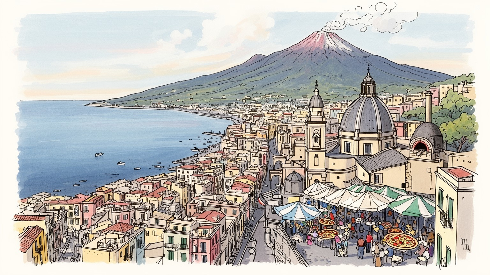
ナポリは南イタリア最大級の都市圏として、地中海、EU、北アフリカ、バルカンへ開く港を持ちます。NATO拠点も近く、移民、物流、防災、南北格差をめぐる国家課題が、湾岸の生活圏へ直接入り込む都市です。火山防災も重いです。
港湾、物流、観光、食品、大学、医療、公共部門、職人仕事が雇用を支えます。失業、非正規、地下経済も強く、若者は地元で働く誇りと北部や国外へ出る選択の間で揺れます。南の経済の縮図でもあります。家計に深く響きます。
旧市街の教会、サン・ジェンナーロの儀礼、ピザ、市場、音楽、サッカー、家族の食卓が都市の声を作ります。信仰は観光資源にとどまらず、不安、病、貧困、祝祭を受け止める日常の制度でもあります。街の暦を今も作る力です。
旅行者は湾、旧市街、地下遺構、ピザ、ポンペイへの玄関を楽しむが、住民には住宅の老朽化、混雑、犯罪不安、観光圧、ごみ、交通が切実です。美しい都市は、生活の摩擦を隠さず抱えています。路地にも現れる姿です。
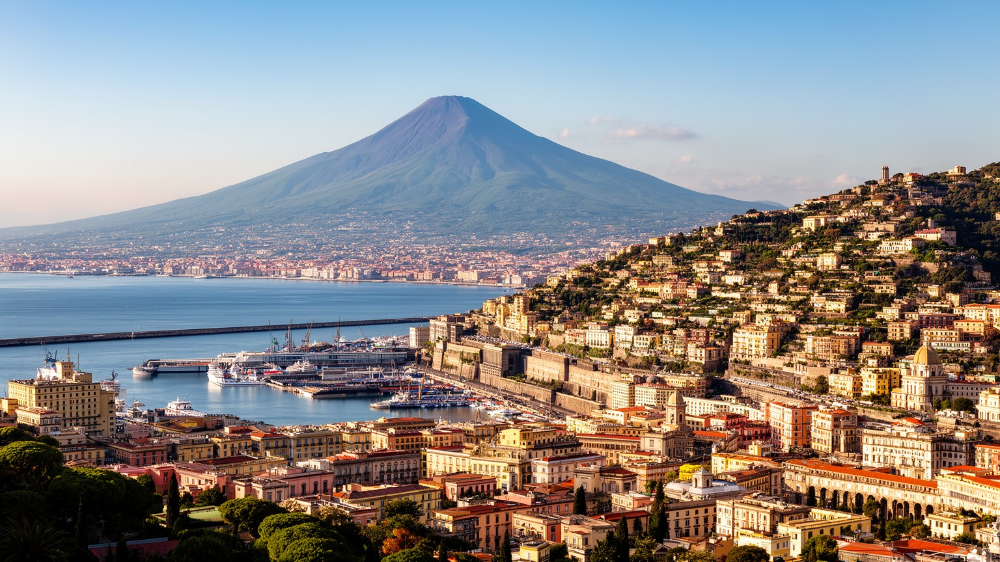
ナポリの地理は、湾の明るさとヴェスヴィオの危険を同時に抱えています。港から振り返ると火山は美しい背景に見えますが、その斜面には住宅地、道路、観光地、農地が広がり、噴火リスクは都市圏の防災計画そのものを形づくります。古代ローマ都市を埋めた火山は観光資源である前に、現在の住民が避難経路、警報、学校、病院、交通をどう準備するかという現実的な問いです。湾は交易、漁業、軍事、旅客、クルーズ、島々への航路を集め、ナポリを南イタリアの玄関にしてきました。海に開く地形は都市へ富と人を呼び込む一方、低地の混雑、港湾の騒音、観光バス、埠頭再開発を生みます。丘へ上れば眺望は広がるが、坂道と交通の不便が日常を重くします。ナポリを読むには、火山を遠景として眺めるだけでなく、海、坂、地下、港、密集住宅が一つのリスク地図を作っていることを見る必要があります。湾の美しさは都市の誇りであり、同時に逃げにくい密度を持つ大都市圏の緊張を映します。フェリーで島へ向かう人、港で働く人、丘の団地から中心へ通う人は同じ地形の上で違う時間を生きります。火山と海は絵になる背景ではなく、都市政策と家族の安心を左右する日々の条件です。風向き、道路の混み方、避難訓練への参加率までが、風景の美しさの内側にある現実を語っています。学校で防災を学ぶ子どもの記憶も、この地形とともに育ちます。
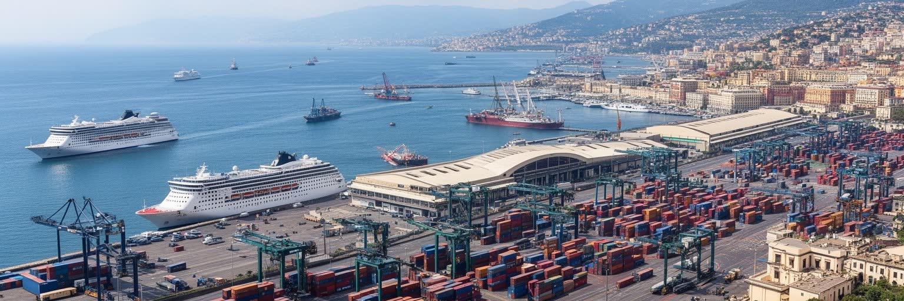
ナポリ港は、観光客がカプリやイスキアへ向かう乗り場であるだけでなく、貨物、フェリー、クルーズ、造船、倉庫、食品流通、軍事と行政の機能を束ねる実用の都市装置です。南イタリアの消費財や食料、建材、工業製品は港と高速道路、鉄道、内陸物流を通じて動き、湾岸には見えにくい労働が積み重なります。クルーズ船が入れば中心部の店はにぎわうが、短時間滞在の人流は混雑と収益の偏りも生みます。港湾は雇用を生み、国際的な接続を与える一方、労働条件、下請け、違法取引、環境負荷、港と旧市街の境界をめぐる問題も抱えます。港の近くでは、観光の明るい表情と物流の荒い動きがすぐ隣にあります。フェリーは島の生活を支える交通であり、クルーズは都市を消費する視線を運びます。コンテナや倉庫の背後には、南部経済が北部や海外市場とどう結ばれるかという大きな問いがあります。港を単なる玄関として見ると、ナポリの働く都市としての姿を見落とします。埠頭を出入りするトラック、朝の市場へ向かう食材、船員の店、警備、税関、清掃の仕事が、湾岸の華やかな眺めを支えています。港湾の再整備は景観をよくするだけでなく、住民の移動、空気、雇用、公共空間の質を変える都市政策です。海辺の散策路とフェンスの向こうの作業場を同時に見る時、都市の経済が具体的な音と匂いを持って現れます。船の汽笛もその一部です。
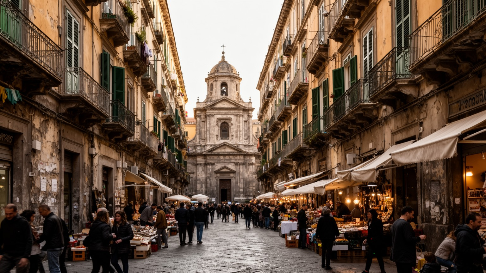
ナポリ旧市街は、世界遺産として語られる前に、人が住み、働き、祈り、買い物をする高密度の生活空間です。ギリシャ・ローマ期の都市軸を受け継ぐ通り、教会、修道院、宮殿、露店、スクーター、洗濯物、学生、観光客が、細い街路に同時に入ります。建物は歴史の厚みを見せる一方、老朽化、耐震性、湿気、階段、過密、修繕費の問題を抱え、住み続けること自体が簡単ではありません。観光客には混沌が魅力に見えますが、住民には騒音、ゴミ出し、配送、短期賃貸、夜の治安、公共サービスの不足が切実です。旧市街の価値は、保存された壁や教会の数だけでは測れません。子どもが学校へ行けるか、高齢者が階段を上れるか、日用品店が残るか、修繕が住民を追い出さないかが重要になります。中心部の道は狭く、観光の動線と暮らしの動線が分けにくいです。だからこそ、旧市街は博物館化と生活維持の間で揺れます。ナポリらしさとして消費される路地の活気は、実際には家賃、仕事、家族、近所の相互扶助によって保たれています。保存政策が外観だけを守れば、住民の負担は増えます。生活の密度を尊重しながら安全と衛生を上げることが、旧市街を未来へ渡す条件です。美しさと不便さは同じ石畳の上にあります。観光地図に載らない中庭、階段、井戸、共同の入口にも、長く住んできた人びとの工夫と摩擦が刻まれています。声も響きます。
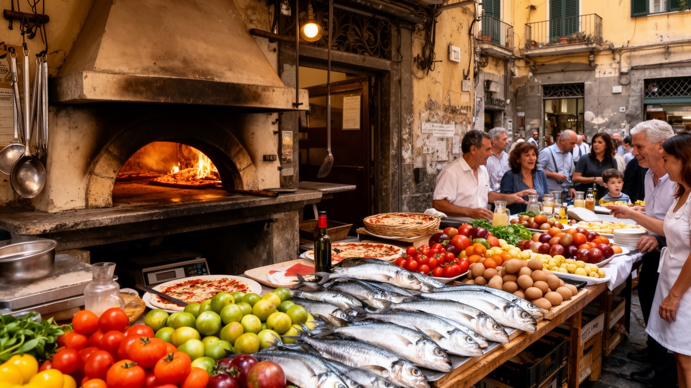
ナポリの食文化は、ピザの名声だけで閉じありません。小麦粉、トマト、モッツァレラ、オリーブ油、バジルが作る単純な料理は、港湾流通、周辺農業、乳製品、職人技、薪窯、安価な外食、移民観光の視線を結びつけています。ピザ職人の技は都市の誇りであり、食堂や屋台、市場、家庭料理、菓子、コーヒーとともに、ナポリの社交を形づくります。旅行者にとってピザは必ず食べたい名物ですが、住民にとって食は日々の予算、家族の時間、近所の店、早朝から仕込む労働に関わります。観光人気が高まるほど、中心部の店は行列と口コミに左右され、価格や営業時間、食材調達も変わります。伝統を守ると言っても、それは古い形を固定することではありません。若い職人が働ける賃金を得られるか、原材料の質を保てるか、観光客だけでなく住民が通える価格を残せるかが問われます。市場では魚、野菜、揚げ物、菓子が地域の暮らしを支え、食は観光商品である前に生活の安全網です。ナポリを食から読むと、南イタリアの農村、港、家族、貧困、職人の誇りが一皿に重なります。ピザの華やかなイメージの裏には、狭い厨房の熱、配達の仕事、店を守る家族経営、観光地化に抗う常連の存在があります。食は都市の評判を作る力であり、暮らしの手触りを守る公共性でもあります。小さな店で交わされる短い会話や、家族で分ける揚げ物の紙包みも、都市の帰属意識を支えています。
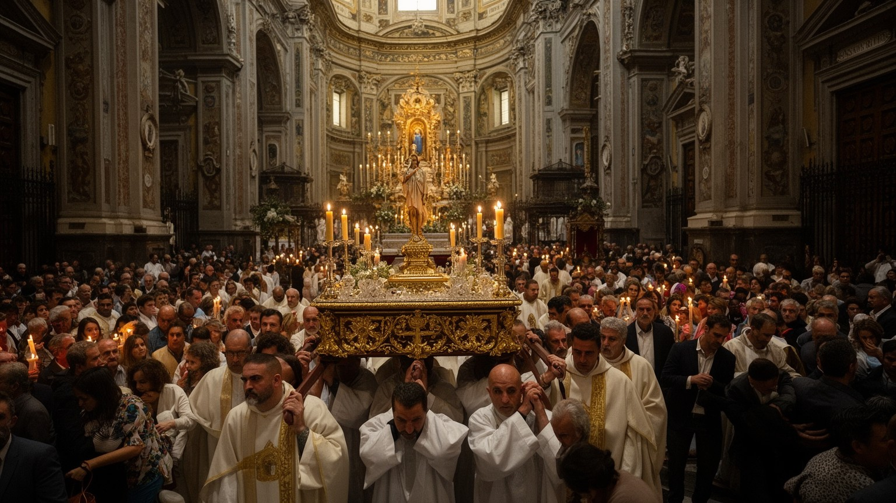
ナポリのカトリックは、教会建築を鑑賞する観光の対象であるだけでなく、都市の不安、貧困、病、家族、死、祝祭を受け止める日常の制度です。守護聖人サン・ジェンナーロの儀礼は、奇跡の物語として知られるが、住民にとっては都市の安全と運命を確認する集団的な時間でもあります。旧市街の教会、祭壇、聖像、行列、鐘、ろうそく、葬儀、結婚式は、狭い街路の生活と密接に結びつきます。信仰は公的福祉が届きにくい場所で、食料支援、相談、孤独な高齢者への手助け、移民や困窮者への支えにもなります。一方で、宗教儀礼は観光化されやすく、祈りの場が撮影や消費の対象になる緊張を抱えます。ナポリでは聖と俗の距離が近いです。市場の声、サッカーの熱狂、家族の願い、病への不安が、教会の空間に入り込みます。地下墓地や聖人信仰をめぐる場所は、死者との関係を都市の記憶として見せます。信仰を読むには、壮麗な大聖堂だけでなく、小さな祭壇、近所の寄付、祭りの準備、街区の人間関係を見る必要があります。宗教は過去の装飾ではなく、危機の多い都市で人びとが希望と説明を得る言葉であり続けます。信じる人も距離を置く人も、祝日や行列、鐘の音によって街の時間を共有します。ナポリの宗教性は、都市の弱さと強さを同時に映しています。祈りは個人の内面だけでなく、近所が互いの不安を知り、支え合うための合図にもなります。
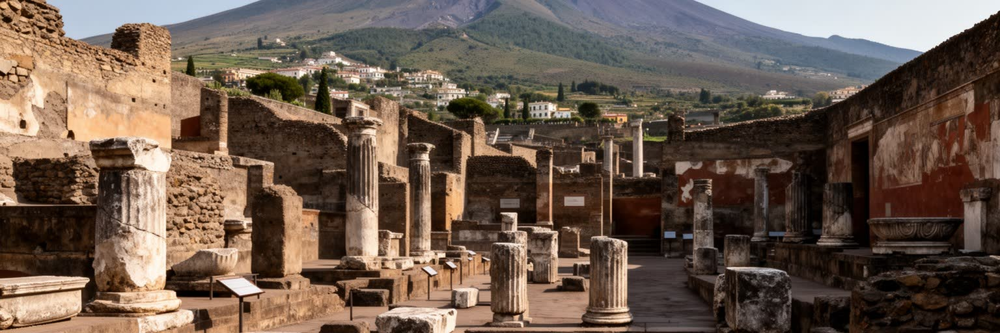
ナポリはポンペイ、ヘルクラネウム、カンピ・フレグレイ、国立考古学博物館を結ぶ考古学の拠点でもあります。古代ローマ都市の遺構は郊外の観光地として独立しているように見えますが、実際には鉄道、道路、宿泊、研究、保存修復、学校教育を通じてナポリの日常経済と結びつきます。ポンペイの壁画、家屋、街路、遺体の鋳型は、火山災害の突然性と都市生活の細部を同時に伝えます。観光客は古代の劇的な物語に引かれるが、遺跡を守る仕事は地味で長いです。雨、日差し、地震、混雑、盗難、修復予算、ガイドの質が、遺産の未来を左右します。ナポリの博物館に収められた出土品を見ると、古代都市の富と生活が現在の都市へ運ばれていることが分かります。考古学は過去を飾るだけでなく、火山の危険、都市の脆さ、観光の倫理を考えさせます。遺跡周辺の住民にとっては、観光収入、交通渋滞、土地利用、雇用が生活に直結します。ナポリからポンペイへ向かう旅は、湾岸都市圏全体が古代から現在まで火山と海に条件づけられてきたことを示します。過去の保存は、現在の住民の暮らしを犠牲にしては続かありません。研究者、修復職人、ガイド、鉄道職員、近所の店が関わる時、考古学は地域の生きた仕事になります。遺跡を静かに読む姿勢が、観光と学びを結びます。出土品の保管や説明の仕方まで、都市の記憶をどう共有するかを問います。街の知識です。
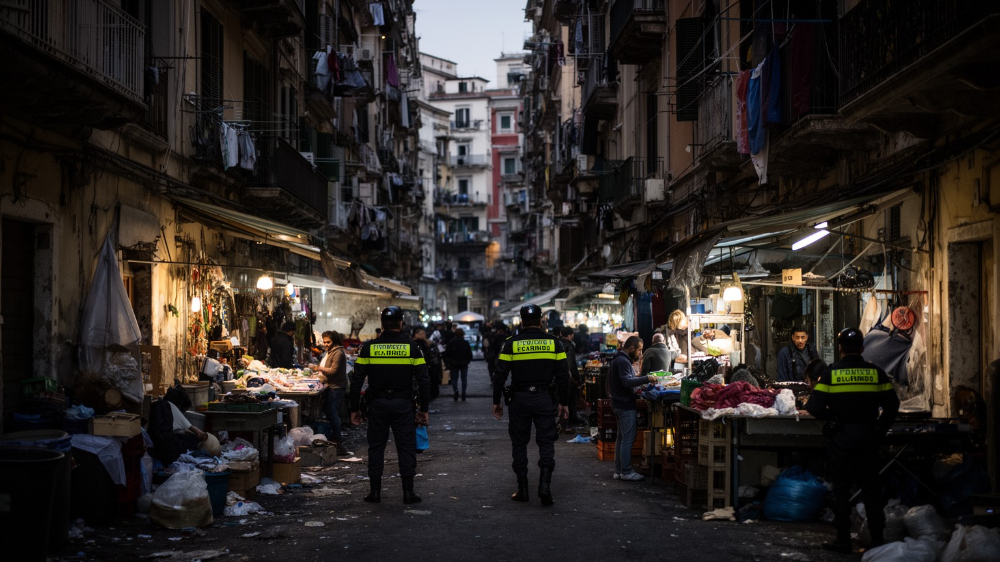
ナポリを語る時、犯罪組織や治安不安のイメージは避けて通れません。しかし、それだけで都市を説明すると、住民の生活、地域の努力、経済構造を見失います。カモッラは違法取引、廃棄物、建設、貸金、密輸、地域支配に関わってきたとされ、若者の選択肢が少ない地区では非合法な収入が身近に見えることがあります。問題は個人の道徳だけではなく、失業、学校中退、住宅の劣化、行政サービスの弱さ、地域への投資不足、地下経済の存在と結びつきます。観光地では明るい街歩きが可能でも、周縁部や一部地区では貧困、薬物、暴力、孤立が深いです。警察や司法だけでなく、学校、スポーツクラブ、教会、NPO、文化施設、職業訓練、家族支援が犯罪への対抗力になります。住民は都市への偏見に傷つきながらも、危険を否認せず、日常を守る実践を続けています。ナポリを読むには、犯罪を消費する視線を避け、誰が搾取され、誰が沈黙を強いられ、どの制度が若者に別の道を示せるかを見なければなりません。治安は観光客の安心だけでなく、住民が夜に帰宅できるか、子どもが広場で遊べるか、商店が脅されず営業できるかという生活の条件です。ステレオタイプを超えて問題を直視することが、都市への敬意につながります。ナポリの困難は現実ですが、抵抗する市民の力もまた現実です。学校に残る仕組みや地域の仕事を増やす政策が、治安を長く変える基礎になります。
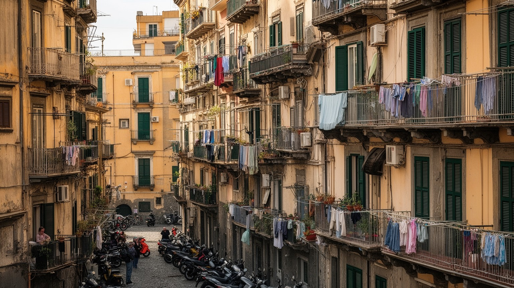
ナポリの暮らしは、海沿いの眺めだけでは分かりません。丘陵地、旧市街、戦後の集合住宅、郊外団地、周辺自治体が一体となって、大きな生活圏を作っています。中心部の古い住宅は歴史的魅力を持つが、狭さ、湿気、階段、老朽設備、耐震、家賃、短期賃貸への転用が問題になります。丘の地区では景色はよくても、坂道や公共交通の不便が通勤、通学、高齢者の外出を制約します。郊外には家族の生活を支える住宅が広がる一方、雇用や公共サービスが弱い地区では孤立感が強まります。ナポリの住宅問題は、南部の所得水準、若者の不安定雇用、家族同居、非公式な貸し借り、移民の住まいとも結びつきます。路地に洗濯物が揺れ、隣人が声をかけ合う風景は親密さを示すが、プライバシーの不足や近隣トラブルもあります。住宅を観光的な情緒として眺めるだけでは、修繕費を誰が負担し、災害時に誰が避難でき、子どもが静かに勉強できるかは見えません。住み続けられる都市にするには、歴史建築の保存、公共住宅、交通、学校、医療、治安、家賃管理を一緒に考える必要があります。日常の質は、湾の美しさよりも、階段の明かり、バスの本数、近所の店、雨漏りの修理で測られることが多いです。ナポリの生活力は、その不便を抱えながら続いています。家の近くで子どもを預け、病院へ行き、買い物を済ませられるかが、街への愛着を支えます。
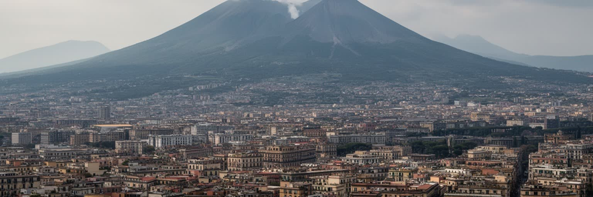
ナポリの火山リスクは、ヴェスヴィオだけでなくカンピ・フレグレイの地面の揺れや隆起とも関わります。美しい湾岸景観の背後では、地震活動、ガス、避難計画、学校での訓練、道路容量、病院の受け入れ、通信、家族の集合場所が重要な都市課題になります。危険区域には多くの住宅があり、避難は地図上の矢印ほど簡単ではありません。高齢者、車を持たない世帯、移民、観光客、病人、港や市場で働く人をどう動かすかは、行政だけでなく地域の信頼に左右されます。噴火の頻度が低いほど、人は危険を遠いものとして感じやすく、日常の家賃や仕事を優先します。だから防災は警報装置だけではなく、住民が情報を理解し、避難の意味を納得し、訓練を現実の行動へつなげる社会的な仕事です。観光地として火山を売り出すほど、リスクを過度に隠さない説明も必要になります。ナポリの難しさは、危険な地形を避けて都市を作り直すことができない点にあります。人びとは火山の近くで働き、祈り、食べ、子どもを育てます。だから火山防災は、恐怖をあおる話ではなく、住み続けるための知識と制度でなければなりません。道路の混雑、港の機能、病院の場所、学校の連絡網を普段から整えることが、いざという時の生死を分けます。火山を美しい遠景として見る視線と、生活圏のリスクとして読む視線を重ねることが、この都市への誠実な理解になります。
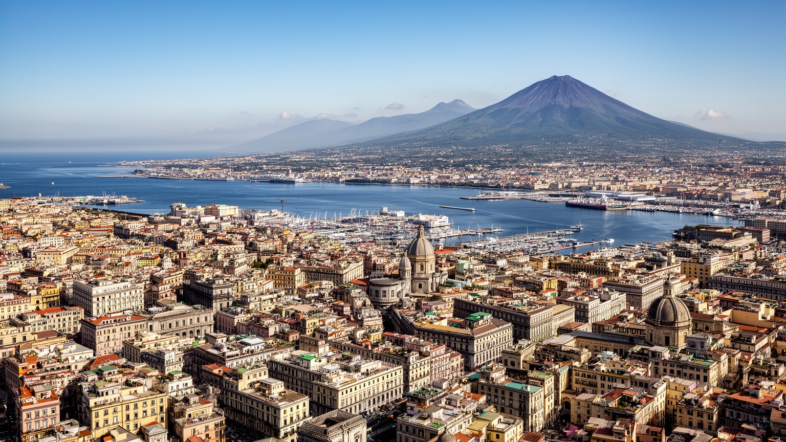
ナポリを世界都市として読む価値は、単純な経済規模よりも、地中海の港、火山リスク、旧市街の密度、宗教儀礼、食文化、考古学、犯罪と社会問題、南イタリアの雇用課題が一つの生活圏に重なる点にあります。湾とヴェスヴィオは強い視覚的な記号ですが、その下には港で働く人、旧市街の住宅を直す人、学校へ通う子ども、教会で支援を受ける人、ピザ店で夜遅く働く若者、ポンペイへ向かう観光客がいます。ナポリの魅力は混沌や情熱という言葉だけでは足りません。そこには制度の弱さ、家族の強さ、非公式経済、観光の希望、偏見への抵抗、災害への備えが同時にあります。都市の評判は長く治安不安や貧困のイメージに縛られてきたが、住民の誇り、文化の厚み、大学や港湾の力もまた現実です。ナポリを読むには、路地の写真を消費するだけでなく、誰がその路地を掃除し、誰が住み続け、誰が外へ出ざるを得ないのかを見る必要があります。美しさと摩擦を分けずに見ることで、この都市は南イタリアの問題だけでなく、観光化、災害リスク、格差、文化継承に悩む多くの港町の鏡になります。ナポリは完成された絵ではなく、海と火山の間で毎日調整され続ける都市です。その不安定さを含めて読む時、街の強さが見えてきます。港、教会、学校、市場を同じ生活圏として読むことが、表面的な印象を越える入口になる視点です。